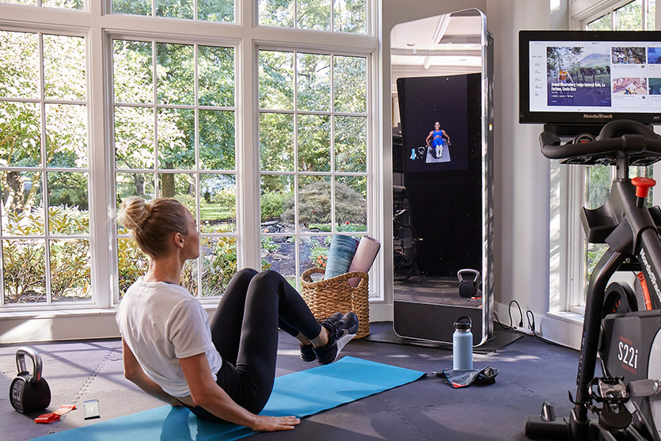
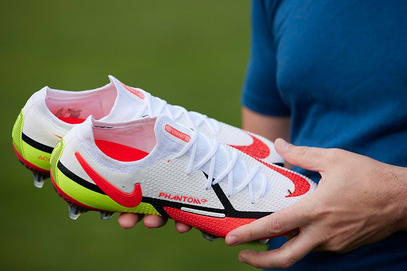
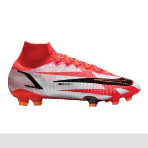

A quality pair of soccer cleats can truly enhance your game. The right footwear can grant you superior support, enhanced traction and improve your feel for the ball. But taking a shot on any random soccer cleat can leave you unimpressed and wanting more. Thankfully, we’ve scoured the field and compiled a list of the best soccer cleats of 2022. Kick your game into high gear and explore these premium options from top brands.
Looking for your first pair of soccer cleats? Brush up on the top features to consider with these Pro Tips on how to buy soccer cleats.
*Disclaimer: Inventory may fluctuate due to product availability.
  All rights reserved ©